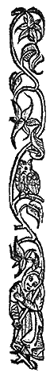

Oro! Se Do Bheatha Bhaile
Oro, Welcome Home!
Jacobite Version
Tune Version 1 (Jig)
Tune Version 2 (Slow March)

|
YOU ARE WELCOME HOME
Chorus: Or ! You are welcome home! Or ! You are welcome home! Or ! You are welcome home! Now that summer is coming 1. Young Charles, King James' grand-son Alas his distress of leaving Ireland He has left Ireland barefoot Routed by the foreigners Chorus 2. Alas that I do not see Even if I were only to live a week thereafter Young Charles and a thousand heroes Routing the foreigners. Chorus 3. Charles is coming over the sea He will have a guard French and Spaniards will be with him And they'll make the heretics dance! Chorus |
ORO! SE DO BEATHA 'BHAILE (Irish)
Curfà: Oro! 'Sé do bheatha 'bhaile Oro! 'Sé do bheatha 'bhaile Oro! 'Sé do bheatha 'bhaile Anois ar theacht an tsamhraidh 1. A Shéarlais Oig, a mhic Ré Shéamais 'Sé mo mhor-chreach do thriall as éirinn Gan tuinnte broig' ort, stoca na leinidh Ach do chascairt leis na Gallaibh Curfà 2. 'Sé mo léan géar nach bhfeicim Mur mboinn beo 'na dhiaidh ach seachtain Séarlas Og is méle gaiscidheach A' fégairt féin ar Ghallaibh Curfà 3. Tà Séarlas Og a' traill ar séile Béidh siad leisean, Franncaigh 's Spàinnigh Oglaigh armtha leis mar gharda 'S bainfidh siad rinnce as éiricigh! Curfà |
BIENVENUE CHEZ TOI!
Refrain: Salut! Bienvenue chez toi! Salut! Bienvenue chez toi! Salut! Bienvenue chez toi! Toi, le messager des beaux jours! 1. Charles, petit-fils du Roi Jacques, Lui, qui quitta l'Irlande en pleurs, Tel un mendiant sans savates Chassé par des usurpateurs; Refrain 2. Que ne puis-je voir le spectacle Dussé-je mourir juste après, D'un millier de soldats de Charles Mettant en fuite l'étranger. Refrain 3. Une fière escorte accompagne Charles qui traverse la mer. Elle vient de France et d'Espagne Pour donner aux Whigs un concert! Refrain Trad. Ch.Souchon (c) 2005 |
|
YOU ARE WELCOME HOME
(Pàdraig Pearse's version) Chorus: Oro! You are welcome home! Oro! You are welcome home! Oro! You are welcome home! Now that summer is coming 1. Welcome O woman who was so afflicted, It was our ruin that you were in bondage, Our fine land in the possesion of theives, And sold to the foreigners Chorus 2. Grainne Mhaol is coming over the sea, Armed warriors along with her as guard, They are Irishmen, not English or Spanish, And they will rout the foreigners Chorus 3. May it please the God of Miracles that we may see, Although we only live a week after it, Grainne Mhaol and a thousand warriors, Dispersing the foreigners Chorus The first song is the original Jacobite version in which The Young Pretender is called "Shearlais Oig, a Mhic Re Sheamais" (Young Charles, King James's grandson") as stated in the first line of the song, is the one who was welcomed home to claim his birthright in 1745. The lyrics of the newer version were written by Padraig Pearse , one of the leaders of the Irish Rebellion of 1916, as an invitation to all Irishmen away from Ireland to return home and join the fight for independence. In his poem the Irish pirate woman of the Elizabethan era Gràinne Ni Mhàille or Gràinne Mhaol (Grace O' Malley, 1530-1603) replaces Prince Charles. The tune is in P. W. Joyce as "Oro,'Se do Bheatha a Bhaile": "Oro, Welcome Home!" A Hauling-Home Song, with following explanation: "The 'Hauling Home' was bringing home the bride to her husband's house after marriage. It was usually a month or so after the wedding, and was celebrated as an occasion next only in importance to the wedding itself. The bridegroom brought back home his bride at the head of a triumphal procession- all on cars or on horseback. I well remember one where the bride rode on a pillion behind her husband. As they entered the house the bridegroom is supposed to speak or sing:
1. - Oro, sé do bheatha a bhaile,
2. Oro, welcome home,
Here is another collector, Mr. Hogan 's note on this air: - "This song used to be played at the 'Hauling Home', or the bringing home of a wife. The piper, seated outside the house at the arrival of the party, playing HARD (i.e. with great spirit): nearly all who were at the wedding a month previous being in the procession. Oh for the good old times!" This tune is called in Stanford-Petrie an "ancient clan march": and it is set in the Major, with many accidentals, but another setting is given in the Minor. I (Joyce) give it here as Mr. Hogan wrote it, in its proper Minor form. In several particulars this setting differs from Dr. Petrie's two versions. It was a march tune, as he calls it: but the MARCH was home to the husband's house. Dr. Petrie does not state where he procured his two versions." It's obvious that Pearse knew both the history and use of this tune as a metaphor for Welcoming Ireland Home as a bride, to a free Ireland. |
ORO! 'SE DO BHEATHA 'BHAILE
(Pàdraig Pearse) Curfà: Oro! 'Sé do bheatha 'bhaile Oro! 'Sé do bheatha 'bhaile Oro! 'Sé do bheatha 'bhaile Anois ar theacht an tsamhraidh 1. 'Sé do bheatha a bhean ba léanmhar! B'é ar gcreach tù bheith i ngéibhinn Do dhùthaigh bhreà i seilbh meirleach Is tù diolta leis na Gallaibh Curfà 2. Tà Gràinne Mhaol ag teacht thar sàile Oglaigh armtha léi mar gharda Gaeil iad féin is ni Gaill nà Spàinnigh Is cuirfidh siad ruaig ar Ghallaibh Curfà 3. A bhui le Ri na bhFeart go bhfeiceam Muna mbeinn beo ina dhiaidh ach seachtain Gràinne Mhaol is mile gaiscioch Ag fogairt fàin ar Ghallaibh  |
YOU ARE WELCOME HOME
(Version de Pàdraig Pearse) Chorus: Salut, te voilà revenue! Salut, te voilà revenue! Salut, te voilà revenue! Toi, messagère des beaux jours! 1. Te voilà sortie du malheurs! Tes chaînes étaient notre ruine, Notre pays courbait l'échine, Pillé qu'il est par des voleurs. Chorus 2. Grainne Mhaol vers nous tu fais route, Accompagée d'hommes armés, Ibères? Francs? Non, Irlandais, Pour mettre l'Anglais en déroute! Chorus 3. O Dieu des miracles, accorde, Dussions-nous mourir juste après, Que nous voyions ces étrangers Dispersés par Grainne et sa horde! Chorus Le premier chant est la version originale Jacobite dans laquelle le Jeune Prétendant, appelé "Shéarlais Oig, a Mhic Ri Shéamais" (Jeune Charles, petit-fils du Roi Jacques") est celui à qui, à la première strophe, on souhaite la bienvenue lorsqu'il revient en 1745, faire valoir les droits que lui confère sa naissance. Les paroles de la version récente sont dues à Pàdraig Pearse , l'un des chefs de la rébellion irlandaise de 1916. C'est une invitation à tous les Irlandais de l'étranger de rentrer pour combattre pour l'indépendance. Dans son poème la femme pirate irlandaise de l'époque élisabéthaine Gràinne Ni Mhàille ou Gràinne Mhaol (Grace O' Malley, 1530-1603) remplace le Prince Charles. La mélodie est intitulée par P. W. Joyce "Oro,'Se do Bheatha a Bhaile": "Oro, Welcome Home!" Chant de Conduite au Foyer (Hauling-Home Song), avec l'explication suivante: "La cérémonie de 'Hauling Home' était la conduite de la mariée au foyer conjugal après la noce. Elle avait lieu un mois ou deux après la noce et était célébrée avec une pompe presqu'égale à celle du mariage lui-même. Le marié conduisait son épouse à la tête d'une procession triomphale - tous à cheval ou sur des charrettes. Je me souviens que la mariée chevauchait en croupe derrière son époux. En entrant dans la maison, le marié devait chanter ou dire:
1. - Oro, sé do bheatha a bhaile,
2. Salut, bienvenue chez toi!
Un autre collecteur, Mr. Hogan note à propos de cet air: - "Ce chant était interprêté lors du 'Hauling Home', ou conduite au foyer de l'épouse. Le sonneur, assis devant la maison se mettait, à l'arrivée du cortège à jouer FORT (de façon très enjouée). Presque tous ceux qui avaient été de la noce un mois auparavant se retrouvaient dans la procession. C'était le bon temps!" La mélodie est définie chez Stanford-Petrie comme une "ancienne marche de clan" et il la note en tonalité majeure avec une foule d'altérations, mais il existe une autre mélodie en mineur. Je (Joyce) donne la version recueillie par Mr. Hogan, sous la forme correcte qui est la mineure. Par de nombreux détails cette version diffère des deux versions notées par le Dr. Petrie. C'est une marche, comme il le dit, mais une marche de procession vers le foyer du marié. Le Dr. Petrie n'indique pas l'origine de ces deux versions." De toute évidence Pearse connaissait l'histoire et l'usage fait avant lui de cette mélodie comme d'une métaphore de l'Irlande, cette épousée qu'on salue, lorsqu'elle regagne sa demeure enfin libérée. |